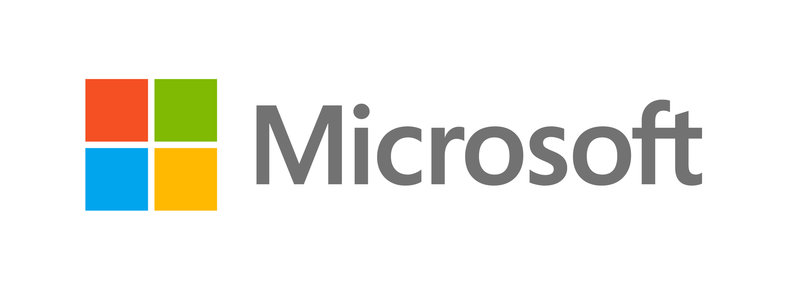
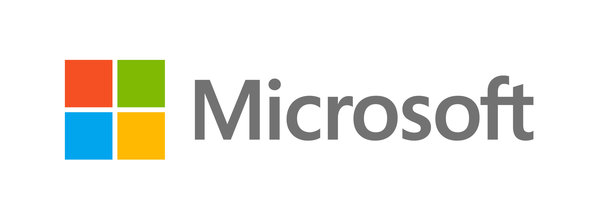
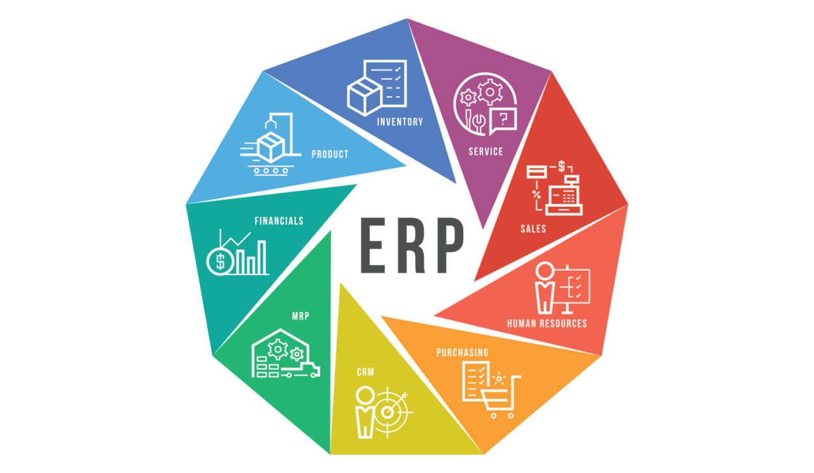
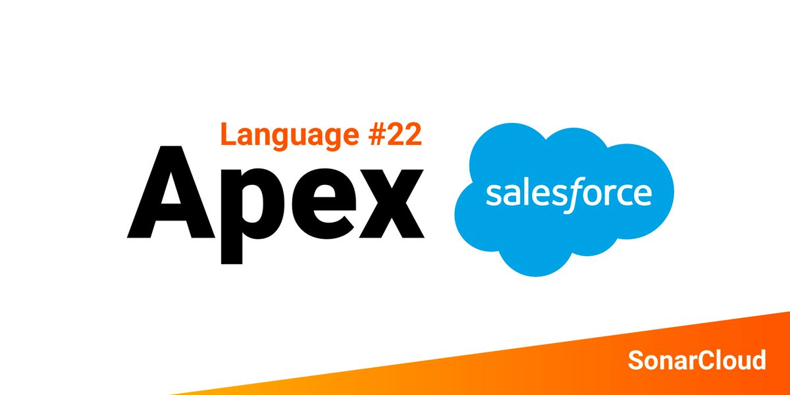

IBM produces and sells computer hardware, middleware and software, and provides hosting and consulting services in areas ranging from mainframe computers to nanotechnology. IBMers believe in progress—that the application of intelligence, reason and science can improve business, society and the human condition. IBM has an organizational culture of think. It’s goal is to unify the whole organization and ensure its long-term success. Some of the IT roles that IBM has are: Data Scientist, Visual Designer, Hardware Developer, Control Analyst, Information Systems Security Engineer. The company uses IBM Watson. It is a supercomputer developed by the American company IBM . He can interpret a colloquial question and, after searching through a collection of encyclopedias , books, magazines, scientific articles and downloaded websites, give a good answer to the question within seconds. Watson uses tailor-made deep question-and-answer software that goes beyond conventional artificial intelligence . Watson also calculates a reliability of his answers and uses this to decide whether the answer is reliable enough to be given.


Microsoft
Microsoft Corporation (often abbreviated as MS ) is an American company based in Redmond , Washington . Microsoft develops, distributes, licenses, and supports a wide variety of computer-related products and services. Microsoft is the world's largest software company. Microsoft is also on the list of companies with the highest market capitalization in the world, on April 25, 2019, it was worth more than 1 trillion US dollars. Microsoft employees are passionate about giving time, money, and skills to address the issues facing our world. Giving is ingrained in Microsoft’s culture—it's how they live their mission to empower every person on the planet to achieve more. Some of the IT roles that Microsoft has are: Data Platform Engineer, IT Service Operations Manager, IT Solution Manager, Data Center Technician, Security Researcher. The company uses SAS. It is is a statistical software suite developed by SAS Institute for data management, advanced analytics, multivariate analysis, business intelligence, criminal investigation, and predictive analytics.
 

SAP
SAP SE is a German multinational software corporation that makes enterprise software to manage business operations and customer relations. In terms of revenue, SAP is the largest European (and non-American) and the world's third largest listed software company. In addition, with a market capitalization of over 165 billion euros, SAP is by far the most valuable German company and the most valuable European brand (as of July 2020).The culture is focused on building inclusive teams, where differences and unique perspectives are embraced so you can contribute to your fullest potential as you pursue your career. Their locations feature a variety of work environments, including open work spaces and virtual connection platforms to inspire productivity and flexible collaboration. They support their employees volunteer interests, and make it a priority to join together in efforts that give back to our communities. Some of the IT roles that SAP has are: System Analyst, Software Developer, Technical Solution Team Lead, Development Architect, Techno Functional Consultant. The company is especially known for its ERP software. It is the integrated management of main business processes, often in real time and mediated by software and technology. ERP provides an integrated and continuously updated view of core business processes using common databases maintained by a database management system. ERP systems track business resources—cash, raw materials, production capacity—and the status of business commitments: orders, purchase orders, and payroll. The applications that make up the system share data across various departments (manufacturing, purchasing, sales, accounting, etc.) that provide the data. ERP facilitates information flow between all business functions and manages connections to outside stakeholders.
Salesforce
Salesforce.com, inc. is an American cloud-based software company headquartered in San Francisco, California. It provides (CRM) customer relationship management service and also sells a complementary suite of enterprise applications focused on customer service, marketing automation, analytics, and application development. At Salesforce, they have built a culture of trust. They keep their culture healthy and strong by being incredibly intentional about their Ohana, our values, their behaviors, and the experiences they deliver. Their culture makes them one of the most innovative, admired, and best places to work in the world. Some of the IT roles that Salesforce has are: Developer, Solution Architect, Platform Architect, Data Specialist, Test Engineer. Salesforce uses Apex. It is a proprietary programming language provided by the Force.com platform to developers similar to Java and C#. It is a strongly typed, object-oriented, case-insensitive programming language, following a dot-notation and curly-brackets syntax. Apex can be used to execute programmed functions during most processes on the Force.com platform including custom buttons and links, event handlers on record insertion, update, or deletion, via scheduling, or via the custom controllers of Visualforce or Lightning Experience pages.

Oracle
Oracle Corporation is an American multinational computer technology corporation headquartered in Redwood Shores, California. The company sells database software and technology, cloud engineered systems, and enterprise software products—particularly its own brands of database management systems. In 2019, Oracle was the second-largest software company by revenue and market capitalization. Theirs culture starts with you. Oracle is filled with passionate people who lead fascinating lives. . Some of the IT roles that ORACLE has are: IT Auditor, IT Security Manager, Database Developer, Site Reliability Engineer , C++ and/or Python Developer.